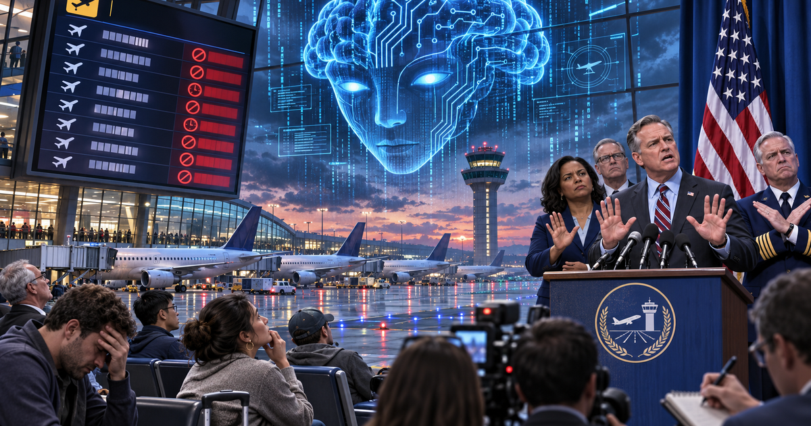

Вечером 13 ноября Федеральное управление гражданской авиации США объявило общенациональный запрет на вылеты (ground stop): ни один борт не мог покинуть ни один аэропорт страны. Это лишь второй такой случай в истории США — первый был после терактов 11 сентября 2001 года, тогда лишь на несколько часов. На момент введения ограничений в воздухе находилось более 3500 самолётов: их постепенно посадили, и в небе осталось меньше 400 бортов. Запрет продержался несколько часов и был снят ближе к утру 14 ноября по Москве.
По данным FlightAware, к позднему вечеру внутри США, в страну и из неё было задержано более 25 тысяч рейсов и около 6600 отменены. Восстановление расписания займёт несколько дней: самолёты и экипажи застряли не в тех аэропортах. Побочный эффект достался и железнодорожному оператору Amtrak — пик нагрузки на сайт и приложение, хотя поезда ходили штатно.
Совпадение бросилось в глаза немедленно: всего за три дня до сбоя FAA объявило о расширении системы SMART на все 22 центра управления воздушным движением. Платформа от компании Air Space Intelligence с помощью ИИ анализирует около 200 потоков данных — маршруты, погоду, загруженность пространства — и прогнозирует проблемы. Контракт на внедрение SMART и FMDS FAA подписало в июне: 12 лет и 875 миллионов долларов.
Разработчик заявил, что SMART к отказу непричастна, и министр транспорта Шон Даффи это подтвердил: ИИ-система не была связана с отказавшим оборудованием. Предварительная причина — устаревшая инфраструктура: по словам министра внутренней безопасности Маркуэйна Маллина, новое оборудование начало перегружать старые системы, из-за чего поплыли радарные данные и связь диспетчеров с бортами. Признаков кибератаки или «вышедшего из-под контроля ИИ» власти не нашли.
Показательна сама реакция: стоит ведомству три дня назад включить новую систему, а потом пережить сбой — и публика уже винит ИИ. Пока что урок другой: возраст и ёмкость старой инфраструктуры FAA — отдельная аварийность, и ИИ-надстройки на ней лишь подсвечивают узкие места.